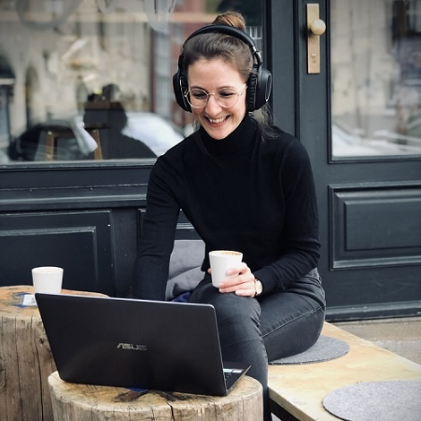

CoffeeCodeBreak ist eine Plattform für alle Frauen, die Interesse am Tech-Bereich haben, ihre Erfahrungen teilen,
sich austauschen oder Mentorinnen finden möchten. Dabei verzichten wir bewusst auf Bewerbungsverfahren oder den Anspruch besonders exklusiv oder elitär zu sein. Denn wir möchten allen Frauen den Zugang zu Mentoring und einem
Netzwerk bieten, das sie darin unterstützt, ihr Potenzial zu erkennen oder zu entfalten.
Hi, ich bin Caro.
Eigentlich habe ich CoffeeCodeBreak entwickelt, weil es mir selbst an Mentor:innen und einem professionellen Netzwerk fehlte.
Aufgefallen ist mir das Ganze, als ich in der absurden Situation steckte, eine Women-in-Tech-Podcast-Folge nach der anderen zu hören, um das nötige Selbstbewusstsein für eine unschöne Konfrontation bei der Arbeit zu sammeln. Mir fehlte es einfach an Vorbildern und echten Mentor:innen, mit denen ich mich hätte direkt austauschen können.
Nichts gegen Podcasts - ich bin immer noch sehr dankbar für jedes Interview, das mir dabei geholfen hat die Situation zu meistern. Dennoch wäre eine echte Konversation der effizientere und gleichzeitig weniger unidirektionale Weg gewesen, die Lösung für mein konkretes Problem zu finden.
Es ist jedoch nachgewiesen, dass Netzwerke und Mentoring einen enormen Einfluss auf unseren beruflichen Erfolg nehmen können. Und deshalb brauchen wir stärkere Frauennetzwerke.
Ich habe lange geglaubt, alles alleine hinbekommen zu müssen. Ob das mit mir oder meinen oben beschriebenen Erfahrungen zusammenhängt, kann ich nicht genau sagen. Mir war nicht bewusst, wie gerne Menschen ihr Wissen und ihre Erfahrungen teilen. Die meisten Menschen fühlen sich sehr wertgeschätzt, wenn sie um Hilfe gebeten werden. In der Regel ist es sogar der Fall, dass Mentor:innen durch den Perspektivwechsel selbst wervtolle Einsichten dazugewinnen.
Je mehr Frauen im Tech-Bereich diese Wertschätzung erfahren, selbst daran wachsen und sichtbar werden, desto mehr Vorbilder haben wir. Und je mehr Vorbilder wir haben, desto selbstbewusster schlagen weitere Frauen einen ähnlichen Weg ein. Aus diesen Gründen lag es nahe, das Ganze nicht nur für mich selbst in die Hand zu nehmen, sondern eine Plattform aufzubauen, die auch von anderen Frauen dazu genutzt werden kann, sich auszutauschen und ein Netzwerk aufzubauen.
<3
Wer steckt dahinter?
Hi, ich bin Caro.
Eigentlich habe ich CoffeeCodeBreak entwickelt, weil es mir selbst an Mentor:innen und einem professionellen Netzwerk fehlte.
Aufgefallen ist mir das Ganze, als ich in der absurden Situation steckte, eine Women-in-Tech-Podcast-Folge nach der anderen zu hören, um das nötige Selbstbewusstsein für eine unschöne Konfrontation bei der Arbeit zu sammeln. Mir fehlte es einfach an Vorbildern und echten Mentor:innen, mit denen ich mich hätte direkt austauschen können.
Nichts gegen Podcasts - ich bin immer noch sehr dankbar für jedes Interview, das mir dabei geholfen hat die Situation zu meistern. Dennoch wäre eine echte Konversation der effizientere und gleichzeitig weniger unidirektionale Weg gewesen, die Lösung für mein konkretes Problem zu finden.

Rückblickend ist es nicht sonderlich erstaunlich, dass es mir an einem Netzwerk unterstützender Frauen fehlte. In technischen Studiengängen sind Frauen in der Unterzahl.
Es gibt nur wenige weibliche Vorbilder im Tech-Bereich. Ich habe außerdem immer wieder beobachtet, dass Männer sich scheinbar leichter damit tun, Netzwerke aufzubauen.
Ich habe die Erfahrung gemacht, in männerdominierten Netzwerken zwar akzeptiert, schlussendlich aber häufig nicht wirklich integriert zu werden.
Das fängt schon mit Whatsapp-Gruppen an, in denen Dinge geteilt werden, die ich "sowieso nicht sehen will", weshalb ich von vorn herein nicht eingeladen werde.Es ist jedoch nachgewiesen, dass Netzwerke und Mentoring einen enormen Einfluss auf unseren beruflichen Erfolg nehmen können. Und deshalb brauchen wir stärkere Frauennetzwerke.
Ich habe lange geglaubt, alles alleine hinbekommen zu müssen. Ob das mit mir oder meinen oben beschriebenen Erfahrungen zusammenhängt, kann ich nicht genau sagen. Mir war nicht bewusst, wie gerne Menschen ihr Wissen und ihre Erfahrungen teilen. Die meisten Menschen fühlen sich sehr wertgeschätzt, wenn sie um Hilfe gebeten werden. In der Regel ist es sogar der Fall, dass Mentor:innen durch den Perspektivwechsel selbst wervtolle Einsichten dazugewinnen.
Je mehr Frauen im Tech-Bereich diese Wertschätzung erfahren, selbst daran wachsen und sichtbar werden, desto mehr Vorbilder haben wir. Und je mehr Vorbilder wir haben, desto selbstbewusster schlagen weitere Frauen einen ähnlichen Weg ein. Aus diesen Gründen lag es nahe, das Ganze nicht nur für mich selbst in die Hand zu nehmen, sondern eine Plattform aufzubauen, die auch von anderen Frauen dazu genutzt werden kann, sich auszutauschen und ein Netzwerk aufzubauen.
<3